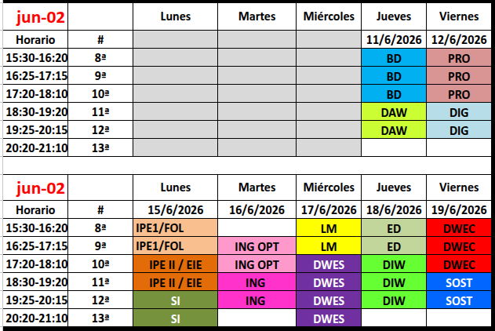
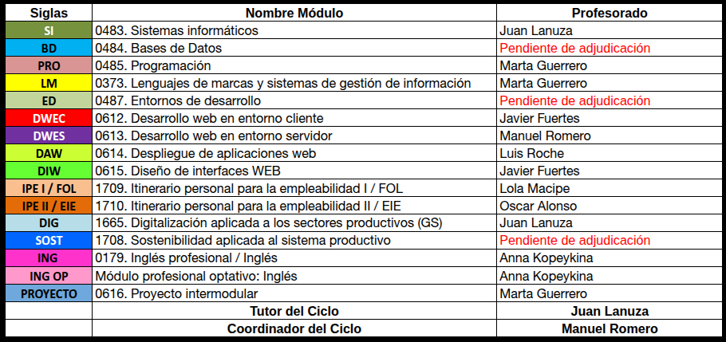
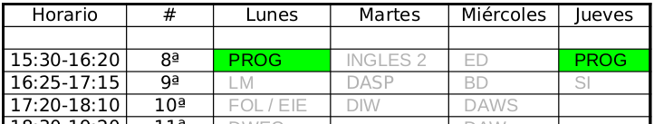
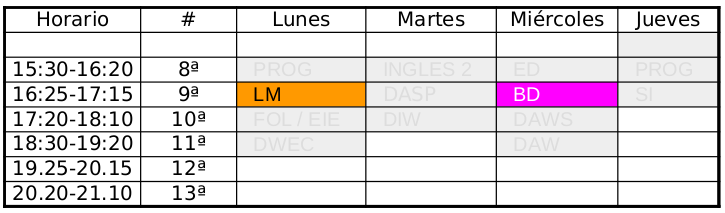
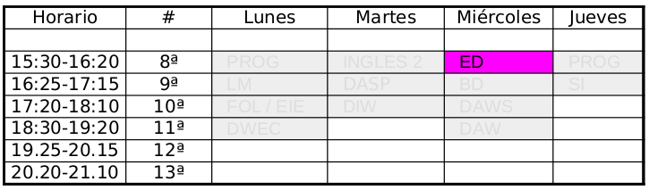
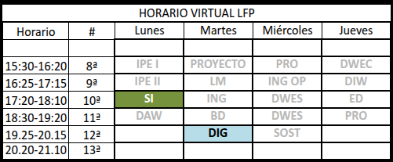
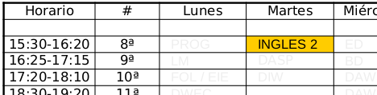

üìΩÔ∏è
Desarrollo de aplicaciones Web
Ciclo de grado superior en modalidad virtual
Índice de la presentación
- Presentación del ciclo
- Presentación de profesoras y profesores
- Modalidad de estudios LOE(Exinción)/LFP
- Horarios, exámenes y fechas importantes
- Convalidaciones y exención de FCT
- Módulos dualizables y las prácticas en empresas
- Nuestro centro: Un centro integrado
- Cómo abordar estos estudios
- Problemas más comunes
Tutor y Coordinador
juan.lanuza@cpilosenlaces.com
- Coordinador: Manuel Romero
manuel.romero@cpilosenlaces.com
Estamos aquí para ayudarte.
No dudes en contactar con nosotros ante cualquier duda.
El ciclo: Desarrollo de aplicaciones Web
- Es un ciclo superior de la familia de comunicaciones e informática
- Hay módulos comunes en el DAM y DAW (primer curso)
-
En distancia no hablaremos de primero y segundo
-
Programación modular (límete de 1000 horas en módulos por año)
-
Existen relaciones de contenidos de módulos
Depedencias de contenidos entre módulos
- Para cursar el módulo de Entornos de Desarrollo
Estar cursando el módulo de Programación
- Para cursar el módulo de Despliegue de Aplicaciones Web
Haber cursado Sistemas informáticos
- Para cursar el módulo de Diseño de Interfaces
Haber cursado Lenguajes de Marcas
- Para cursar el módulo de Cliente y Servidor,
Haber cursado Programación Haber cursado Entornos de desarrollo Haber cursado Bases de Datos
Modalidad de estudios LOE(en Extinción)/LFP
- Actualmente LOE está en extinción,éste es el último año de módulos
- En año 2026/2027 Sería el último año para poder cursar el módulo de FCT y Proyecto
- En LOE aparece el concepto de
Módulos dualizados
- Un módulo tiene una serie de
- Cuando está dualizado , alguno (normalemente uno o dos) de esos RA se adquieren en la empresa
- Cuando se ha adquirido en la empresa**,la calficación del módulo será definitiva.
Horario del curso
- Clases cada semana o dos semanas
- Siempre grabadas
- No son clases para dudas, se puede preguntar
Exámenes
Exámenes primera evaluación (Febrero)
Exámenes segunda evaluación (Mayo)
Primera convocatoria final (Mayo)
Segunda convocatoria final (Junio)
🧑🏫 📚
Listado de profesores
Francisco J. Pérez Aliaga
- Programación 
Samuel Moreno Sastre
- Lenguaje de Marcas
- Bases de datos 
Rubén Manero Buey
Entorno de Desarrollo 
Juan Lanuza Orden
- Digitalización aplicada a los sectores productiovs
- Sistemas informáticos
- Desarrollo de aplicaciones en entorno Cliente 
Lola Macipe Mateo
- Formación y Orientación Laboral / Itinerario Pesonal para la profesionalidad 1
Anna Kopeykina Fenández
- Inglés 1
-
Inglés 2

Isabel Clemente Ibáñez
- Empresa e iniciativa emprendedora
Manuel Alejandro Romero Miguel
- Desarrollo Web en entorno servidor
-
Desarrollo Web en entorno cliente

FCT
-
Las FCT es un módulo más.
-
Son prácticas que se hacen en la empresa.
-
No son remuneradas.
-
Son un módulo más del ciclo
-
Su duración es de 370 horas.
FCT
-
Sólo se pueden hacer una vez superado todos los módulos excepto el del proyecto.
-
Su periodo normal es de septiembre a diciembre en el tercer año.
-
Se puede solicitar la exención cumpliendo los requisitos establecidos. (vemos a continuación)
-
Posibilidad de realizarlas con programa ERASMUS(total o parcial).
Exención de FCT
Cumplir los siguientes requisitos:
Haber trabajado un año, realizando tareas relacionadas directamente con el contenido del ciclo.
Hay que aportar la siguiente documentación:
- Certificado de la empresa que justifique las tareas relacionadas.
- Justificante que verifique la contratación en el periodo igual o superior a un año a jornada completa.
- Impreso rellenado de los formularios de nuestra página web.
La concesión se realiza en el centro (Jefatura-Departamento), puede ser parcial,(con todos los requisitos).
Proyecto
- Módulo que se presenta con todos los módulos superados
- Este módulo no se puede convalidar
- El tema del proyecto lo podéis (muy aconsejado) proponer
- Si estás matriculado, pero no cumples condiciones, no corre convocatoria
- En este caso, no hace falta renunciar
EL módulo de proyecto tiene las siguientes convocatorias:
- Enero y Marzo :
-
- Personas que superan las FCT en el periodo ocutbre-diciembre
- Marzo y Septiembre :
-
- Si tus FCT’s terminan despu√©s de diciembre y antes de marzo
- Junio y Septiembre :
-
- Si tienes exento las FCT0s y apruebas todo en mayo-junio
-
- Si Tus FCT se han alargado más de Marzo
Si estás matriculado, pero no cumples condiciones, no corre convocatoria y no hay que renunciar
Centro integrado
- Bolsa de trabajo muy activa
-
- Podéis inscribiros cuando tituléis (o antes)
- Oficina del inaem en el centro
-
- Abierto miércoles y viernes en horario de mañana (8.30 - 14:00)
-
- Mejor concretar cita o llamar antes de venir (Departamento de IOP)
-
- Persona asignada del inaem al centro Elena Monforte
- Departamento de calidad
- Actividades a lo largo de año
- Formación dual
- Curso de certificados profesionales subvencinados por el inaem
- Jornadas técnicas
- Cursos de certificaciones profesionales del INAEM
-
- Fechas y cursos por concretar
Problemas más comunes de los estudiantes
- Plataforma no funciona
- Contenidos obsoletos
- Links que no llevan a ningún sitio
- Fechas de entregas con las prácticas
- Mi práctica, a mi me funciona, pero al profesor no
- ❓ Otras
Plataforma no funciona
- Extrenamos plataforma
- Está muy testeada y depurada
- Confiamos en tener un producto de calidad
Contenidos obsoletos
- Los profesores tenemos la responsabilidad y obligación de actualizar los contenidos según nuestra programación
- Teneís derecho a contenidos de calidad, si no fuera así, nos lo podéis hacer saber al tutor o al coordinador
Links que no llevan a ningún sitio
- Puede ocurrir
- Hacernoslo saber
- Intentaremos anticiparnos
Fechas de entrega de las prácticas
- Debéis planificar bien
- Las fechas se conocen con tiempo y no se modificarán
- Preparad las cosas con tiempo, no lo dejéis para el último día
A mi me funciona la práctica
- Revisad con el profesor
- Hablad para ver por qué no funciona